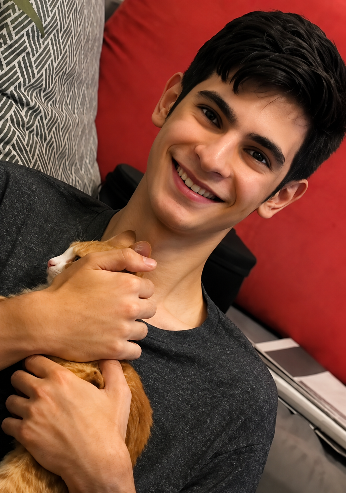

Arshan Ghassemi

Une enfance faite de curiosité et de construction
Je m’appelle Arshan Ghassemi. J’avais 18 ans et je vivais à Téhéran. Je suis né le 5 août 2007, un jour d’été, à Toronto, au Canada. J’ai beaucoup de souvenirs heureux de mon enfance ; nous vivions la plupart du temps en Iran.
J’aimais construire avec des Lego. Il m’arrivait de passer des heures à assembler ces petites pièces pour créer quelque chose de nouveau.
J’étais considéré comme un enfant intelligent et doué. Mon enfance était intimement liée à la curiosité et à la construction. Dès mes premières années, mon esprit ne restait jamais en repos : je voulais savoir, apprendre et construire.
Je voulais comprendre comment transformer, de mes propres mains, quelque chose qui n’existait encore que dans mon esprit et mon imagination en une réalité.
J’étais créatif et j’aimais trouver des solutions aux problèmes. C’est peut-être cet état d’esprit qui m’a très tôt conduit vers le monde de la robotique.
En grandissant, je me suis rendu compte de plus en plus de ce qui me différenciait des jeunes de mon âge. Étudier n’était pas difficile pour moi : j’apprenais très vite et j’obtenais d’excellentes notes.
La robotique
J’étais encore très jeune lorsque la robotique est devenue pour moi bien plus qu’un simple centre d’intérêt.
Passer des heures à réfléchir, essayer, démonter, échouer puis reconstruire faisait désormais partie de ma vie.
En 2019, je suis parti avec l’équipe de robotique de mon école, Salam Sadr, participer à la RoboCup Asia-Pacific à Moscou.
Les photos de cette époque existent encore : un adolescent au milieu de son équipe, vivant l’une des premières grandes expériences de sa vie.
Mais mon envie de construire ne s’est pas arrêtée là. Des années plus tard, j’ai continué la robotique et obtenu la première place lors d’une compétition liée à l’Université Azad, dans le domaine des robots domestiques.
Pour moi, un classement ou une médaille n’était pas simplement la fin d’une compétition. Derrière chaque réussite se trouvaient des heures d’efforts et des échecs qui, chaque fois, m’obligeaient à recommencer.
J’aimais également la musculation et je passais une partie de mon temps libre à la salle de sport.
Devenir ingénieur
J’ai passé le concours d’entrée à l’université en Iran et j’ai été admis en génie des polymères à l’Université des Sciences et de la Recherche.
Je voulais devenir ingénieur pour pouvoir transformer en réalité tout ce que j’imaginais depuis mon enfance.
Je pensais que mes idées et mes inventions pourraient un jour étonner le monde.
Mais pour moi, construire ne se limitait pas aux robots et aux composants électroniques.
Les animaux
Un jour, j’ai sauvé un chaton dans la rue.
Mais ce chat n’a pas été le dernier. Par la suite, d’autres chats ont croisé mon chemin et je n’ai pas réussi à passer devant eux avec indifférence.
Pour certains, ce n’étaient peut-être que des animaux abandonnés au coin d’une rue.
Pour moi, c’étaient des êtres qui avaient besoin d’aide.
Toujours là pour les autres
J’étais pareil avec les êtres humains.
L’un de mes camarades de classe avait perdu son père et le chagrin de cette disparition l’avait profondément bouleversé.
Lorsque j’ai compris les moments difficiles qu’il traversait, sans rien dire à mes parents, j’ai essayé d’être présent pour lui.
Je lui ai parlé, je l’ai accompagné et j’ai fait tout ce que je pouvais pour qu’il ne reste pas seul pendant ces jours sombres.
Ma mère ne savait rien de cette histoire.
Ce n’est qu’après ma mort que la mère de ce garçon la lui a racontée.
Parfois, ce n’est qu’après la disparition de quelqu’un que l’on découvre qu’en silence, il avait allumé une lumière dans plusieurs autres vies — une lumière qui continue de briller après son départ.
« Je suis resté pour construire ce pays »
Bien que je sois né au Canada, que j’aie visité de nombreuses villes européennes depuis mon enfance et que je sache qu’au-delà des frontières de l’Iran la vie pouvait être différente, j’avais consciemment choisi de vivre à Téhéran.
J’aimais cette ville malgré son agitation incessante, ses embouteillages épuisants et sa pollution étouffante.
J’avais même un tee-shirt représentant Téhéran.
Pour moi, Téhéran n’était pas seulement une ville où vivre.
C’était chez moi.
J’aimais aussi mon Iran. Malgré toutes ses difficultés, je lui appartenais.
On m’a souvent demandé pourquoi j’avais choisi de vivre en Iran.
Je croyais sincèrement pouvoir contribuer à faire de l’Iran un endroit meilleur où vivre.
J’avais de l’espoir et je savais qu’un jour les Iraniens pourraient libérer leur pays.
Et je voulais, de tout mon cœur, y prendre part.
Le soulèvement de Mahsa
Lors du soulèvement de Mahsa en 1401 [2022], j’avais environ 14 ans.
Malgré mon jeune âge, j’étais présent dans la rue.
Un agent m’a frappé au point qu’il ne restait pratiquement aucune partie de mon corps sans ecchymoses.
Il ne m’a finalement pas emmené avec lui.
Il m’a dit que mon jeune âge et ma petite corpulence avaient suscité sa pitié et il m’a laissé partir.
L’hiver 2025-2026
Lorsque la situation économique difficile et les problèmes sociaux ont poussé mes compatriotes dans les rues, j’ai décidé, moi aussi, de ne pas rester simple spectateur, bien que personnellement je n’aie pas de difficultés financières.
Je voulais la liberté et le bien-être pour mes compatriotes.
Peut-être parce que moi-même j’avais accès à la liberté et que je pouvais quitter le pays quand je le souhaitais.
Mais mon cœur battait pour ceux qui n’avaient pas eu ma chance.
J’avais au moins vu et ressenti ce qu’était un minimum de liberté.
Certains, depuis leur naissance, n’en avaient même jamais vu la couleur, et cela me faisait souffrir.
J’étais très jeune, mais je comprenais que mon pays possédait d’immenses richesses et possibilités, alors que la manière dont il était gouverné avait appauvri sa population.
Le 8 janvier 2026
Durant la deuxième semaine de Dey, les grèves et les manifestations avaient pris de l’ampleur.
Les gens semblaient déterminés, comme s’ils avaient véritablement décidé de se libérer de l’oppression, de la tyrannie et de l’injustice.
Cela me rendait heureux.
Ces jours-là, tout le monde parlait d’un appel invitant la population à descendre pacifiquement dans les rues, dans un esprit d’unité et de solidarité.
Ce n’était pas un appel ordinaire : il venait de quelqu’un qui, depuis des années, était présenté comme le seul sauveur de l’Iran et qui avait redonné joie et espoir aux gens.
Je me souviens parfaitement du 8 janvier 2026.
Depuis le matin, j’étais impatient et je cachais cette excitation à ma mère.
Elle se serait inquiétée ; elle restait profondément marquée par ce qui m’était arrivé lors du soulèvement de Mahsa.
Avant de sortir, j’ai publié sur Instagram une image appelant au retour de la grandeur de l’Iran.
J’ai également écrit et signé une phrase sur un tableau blanc accroché au mur de ma chambre.
J’ai toujours voulu savoir. Maintenant, je comprends que parfois, ne pas savoir peut être une bénédiction.
Place Haft-e Tir
J’ai quitté la maison sans prévenir mes parents et je me suis rendu place Haft-e Tir.
Les rues étaient remplies de monde.
J’étais bouleversé par l’incroyable solidarité et l’unité des gens.
J’étais heureux d’être parmi eux et d’unir ma voix à la leur.
D’une seule voix, avec enthousiasme, nous criions notre désir de liberté.
Nous voulions retrouver la grandeur de l’Iran.
Nos slogans traversaient l’obscurité de la nuit et semblaient annoncer la victoire.
L’enthousiasme de la foule semblait illuminer la nuit.
Au cœur de l’hiver, l’espoir nous réchauffait.
Quelle sensation merveilleuse.
Et nous ignorions que notre unité avait tellement fait trembler le tyran de notre époque qu’il en voulait à nos vies.
Les tirs
La victoire commençait à peine à prendre vie lorsque les gaz lacrymogènes firent pleurer ces yeux qui, quelques instants auparavant, étaient remplis d’espoir et de joie.
Les cris et la peur remplacèrent nos slogans.
La nuit qui avait été illuminée par l’espoir devint de plus en plus noire.
Il existait encore une noirceur au-delà de tout ce que j’avais connu jusque-là : la noirceur du massacre.
Ils étaient venus pour tuer.
Ils visaient les cœurs et, entre incrédulité et réalité, je regardais les rêves tomber à terre.
Puis une balle atteignit ma gorge.
Je suis tombé.
Je savais que ma fin était arrivée et que je devais m’envoler.
C’était beaucoup trop tôt pour partir, mais s’élever était beau.
Je pensais à ma famille.
Que leur arriverait-il ? Me pardonneraient-ils ?
J’avais crié pour la liberté de mon Iran, mais j’avais reçu en retour une balle qui ne m’avait pas seulement tué : elle avait également blessé le cœur de mon père et de ma mère, d’une blessure qui brûlerait pour toujours.
L’hôpital
Apparemment, certaines personnes me connaissaient.
Elles m’ont confié à un motocycliste inconnu pour qu’il m’emmène à l’hôpital.
Elles espéraient que je survive.
Elles lui avaient donné mon nom ainsi que ceux de mes parents afin que je puisse être identifié à l’hôpital.
Ma famille, elle, ne savait toujours rien.
L’un de nos proches a appelé mon téléphone, sans savoir ce qui s’était passé.
Cette fois, je n’ai pas répondu.
Quelqu’un à l’hôpital a décroché et lui a annoncé qu’Arshan avait été touché par balle et qu’il était mort.
Cette personne n’a pas réussi à annoncer immédiatement cette nouvelle à ma mère.
On lui a d’abord dit que j’avais été blessé à l’épaule et qu’ils devaient se rendre au plus vite à l’hôpital.
Pendant quelques instants encore, au moins, ils me croyaient vivant.
Ils se sont mis en route avec un espoir qui n’était pas encore éteint.
Trop tard pour me dire adieu
Mais lorsqu’ils arrivèrent, la réalité était tout autre.
Il était beaucoup trop tard pour me dire adieu.
L’espoir qu’ils avaient porté avec eux pendant tout le trajet jusqu’à l’hôpital s’est éteint à cet instant.
On leur a permis de me voir et de m’identifier.
Le cœur brisé et bouleversés, ils criaient mon nom en pleurant, incapables de croire que j’étais parti.
Pour eux, j’étais encore le petit Arshan qu’ils avaient tenu dans leurs bras quelques années auparavant, celui qui s’asseyait sur leurs genoux, leur récitait des poèmes et leur montrait ses dessins.
Ils avaient des milliers de rêves et d’espoirs pour moi.
Et le tyran de notre époque m’avait arraché à eux, lâchement et sans pitié.
Ce n’était pas ce que la vie nous devait, à ma famille et à moi.
Le lendemain
Le lendemain, 9 janvier 2026, ma famille et mes proches, entourés d’un grand nombre de personnes venues me dire adieu, m’ont confié à la terre de mon pays.
Ils étaient encore incrédules, le cœur brisé et les yeux remplis de larmes.
Nos adieux avaient la dimension de tous mes rêves désormais anéantis.
Mais je n’étais désormais plus seulement le fils de mes parents.
Même si je n’étais pas né en Iran, j’étais maintenant, avec fierté, un enfant de l’Iran.
Je reposais désormais paisiblement dans cette terre que j’avais tant aimée.
Les derniers mots écrits sur mon mur
Les derniers mots écrits de ma main, restés sur le mur de ma chambre, sont aujourd’hui gravés sur ma pierre tombale :
« Nous ne mourrons pas à genoux, ni ici, ni ailleurs. »
C’est ce que j’avais écrit avant de partir dans la rue.
Malgré toute leur douleur, mes parents ont respecté ma volonté.
Ils ont fait graver cette phrase sur ma tombe en reproduisant ma propre écriture, afin qu’elle leur rappelle ce en quoi je croyais.
Quarante jours plus tard
Quarante jours plus tard, dans une atmosphère placée sous surveillance sécuritaire, ma famille ainsi que des amis et des connaissances sont venus me rendre visite.
À une époque où même faire son deuil n’était pas facile, ils étaient venus maintenir mon souvenir vivant.
J’imagine combien il devait être difficile pour une mère qui, seulement quarante jours auparavant, avait enterré son fils innocent de 18 ans, de se tenir debout et de parler de lui.
Et elle a parlé.
Je suis fier d’elle.
Après les paroles de ma mère, ils ont libéré des colombes dans le ciel.
Au milieu de toute cette douleur, les colombes quittèrent une à une leurs mains et s’envolèrent vers le ciel, vers moi.
Elles apportaient les salutations de mes parents, leur message d’amour et leur immense manque.
Les regards quittèrent la terre et ces jours amers pour se tourner vers le ciel.
Ne nous laissez pas devenir seulement des nombres
Ma vie a été courte.
Mais pendant ces quelques années, j’ai beaucoup appris, construit, voyagé, participé à des compétitions, sauvé des animaux abandonnés dans les rues et, sans que personne le sache, été présent pour mes amis lorsqu’ils avaient besoin de moi.
Mon rêve est qu’un jour l’Iran soit libre et prospère et que, dans cet Iran libre, aucun père ni aucune mère ne se voie rendre son enfant mort simplement parce qu’il a exprimé ce qu’il désirait.
Aucun parent ne devrait avoir à embrasser la photographie de son enfant au lieu de pouvoir le prendre dans ses bras.
Je sais que mes propres souhaits sont désormais hors de ma portée.
Mais si je pouvais encore exprimer une seule demande, ce serait celle-ci :
Derrière chaque nom se trouve une mère qui respire encore l’odeur des vêtements de son enfant.
Un père qui pleure encore en secret.
Une sœur ou un frère qui devra désormais chercher pour toujours l’être aimé disparu dans ses souvenirs.
Ne restez pas spectateurs jusqu’à ce que l’Iran soit libre.
Ne mourez pas à genoux.
Restez et construisez.
Terminez ce que je n’ai pas pu terminer.
Et au fait, maman…
Prends-les dans tes bras à ma place, pour qu’ils ne ressentent pas trop mon absence.
Traduction française à partir du récit original publié en persan.
Le récit original est rédigé à la première personne, comme si Arshan racontait lui-même son histoire. Cette forme narrative restitue sa voix, sa vie et les témoignages recueillis sur son parcours.
messages@visages-iran.org